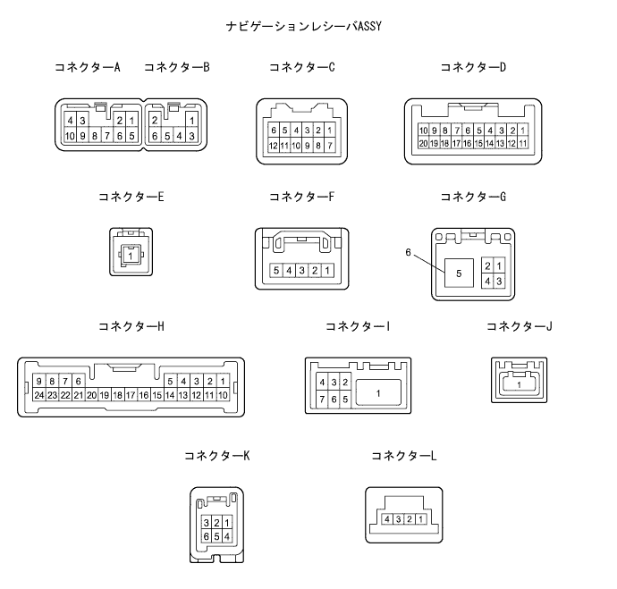
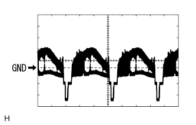

Back Guide Monitor System Terminals of ECU |

| Terminal No. (Terminal Symbol) | Input/Output | Item | Measurement Condition | Specified Condition | Trouble symptom if out of standard O: When open circuit S: When shorted to body |
|---|---|---|---|---|---|
| A3(ACC) - A7(E) | Input | Voltage | IG ACC | 11 to 14 V | O: System does not operate S: Fuse blown |
| A4(B) - A7(E) | Input | Voltage | Always | 11 to 14 V | O: System does not operate S: Fuse blown |
| A7 (E) - Body ground | Input | Resistance | Always | Below 1 Ω | O: System does not operate |
| Terminal No. (Terminal Symbol) | Input/Output | Item | Measurement Condition | Specified Condition | Trouble symptom if out of standard O: When open circuit S: When shorted to body |
|---|---|---|---|---|---|
| F2(IG) - A7(E) | Input | Voltage | IG ON | 11 to 14 V | O: System does not operate S: Fuse blown |
| F3(SPD) - A7(E) | Input | Voltage | Drive at 5 km/h or more | 9 V or more → 1 V or less repeatedly | Back guide does not operate |
| F5(REV) - A7(E) | Input | Voltage | Shift lever in R | 11 to 14 V | Own vehicle position mark moves forward even when reversing |
| Terminal No. (Terminal Symbol) | Input/Output | Item | Measurement Condition | Specified Condition | Trouble symptom if out of standard O: When open circuit S: When shorted to body |
|---|---|---|---|---|---|
| H2(CANH) | - | - | - | - | Back guide monitor does not operate |
| H3(CANL) | - | - | - | - | Back guide monitor does not operate |
| H21 (CGND) - Body ground | - | Resistance | Always | Below 1 Ω | Back guide monitor does not operate |
| H22(V+) - H21(CGND) | Input | Waveform | IG ON, shift lever in R | Waveform 1 | No screen display |
| H23 (V-) - Body ground | - | Resistance | Always | Below 1 Ω | No screen display |
| H24(CA+) - H21(CGND) | Output | Voltage | IG ON, shift lever in R | 5.7 to 6.5 V | O: Back guide monitor not displayed S: Fuse blown |
 |
Waveform 1
| Item | Description |
|---|---|
| Measurement Terminal | H22(V+) - H21(CGND) |
| Tool Setting | 0.2 V/DIV、10 μS/DIV |
| Measurement Condition | IG ON, shift lever in R |
| Terminal No. (Terminal Symbol) | Input/Output | Item | Measurement Condition | Specified Condition | Trouble symptom if out of standard O: When open circuit S: When shorted to body |
|---|---|---|---|---|---|
| 1(CV-) - 3(CGND) | - | Resistance | Always | Below 1 Ω | Back guide monitor screen not displayed |
| 2(CV+) - 1(CV-) | Output | Waveform | IG ON, shift lever in R | Waveform 1 (approx. 0.65 V) | Back guide monitor screen not displayed |
| 3 (CGND) - Body ground | - | Resistance | Always | Below 1 Ω | Back guide monitor not displayed (black screen) |
| 4 (CB+) - Body ground | Input | Voltage | IG ON, shift lever in R | 5.7 to 6.5 V | O: Back guide monitor not displayed (black screen) S: Fuse blown |
Waveform 1
| Item | Description |
|---|---|
| Measurement Terminal | 2(CV+) - 1(CV-) |
| Tool Setting | 0.2 V/DIV、0.2 μS/DIV |
| Measurement Condition | IG ON, shift lever in R |